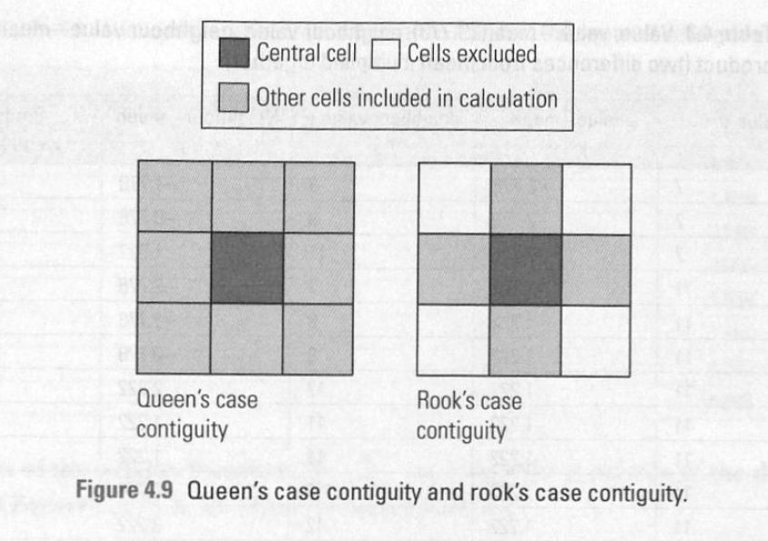
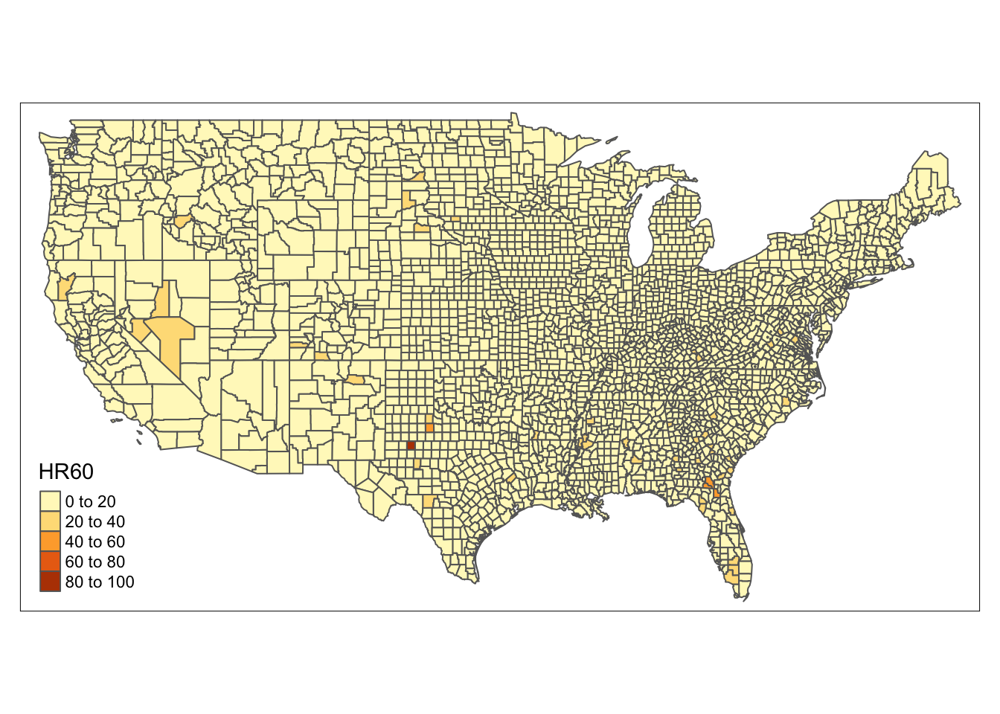
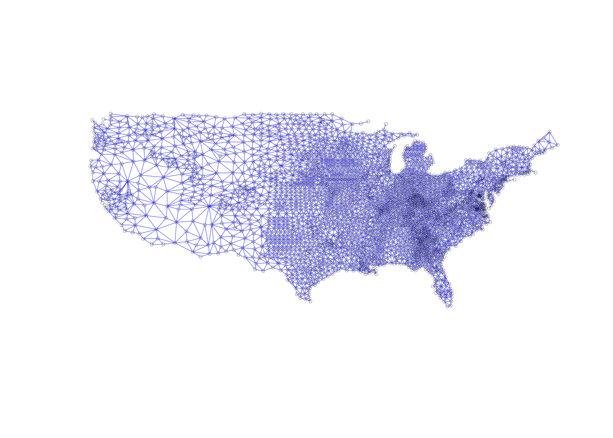
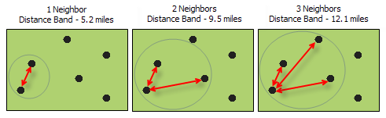
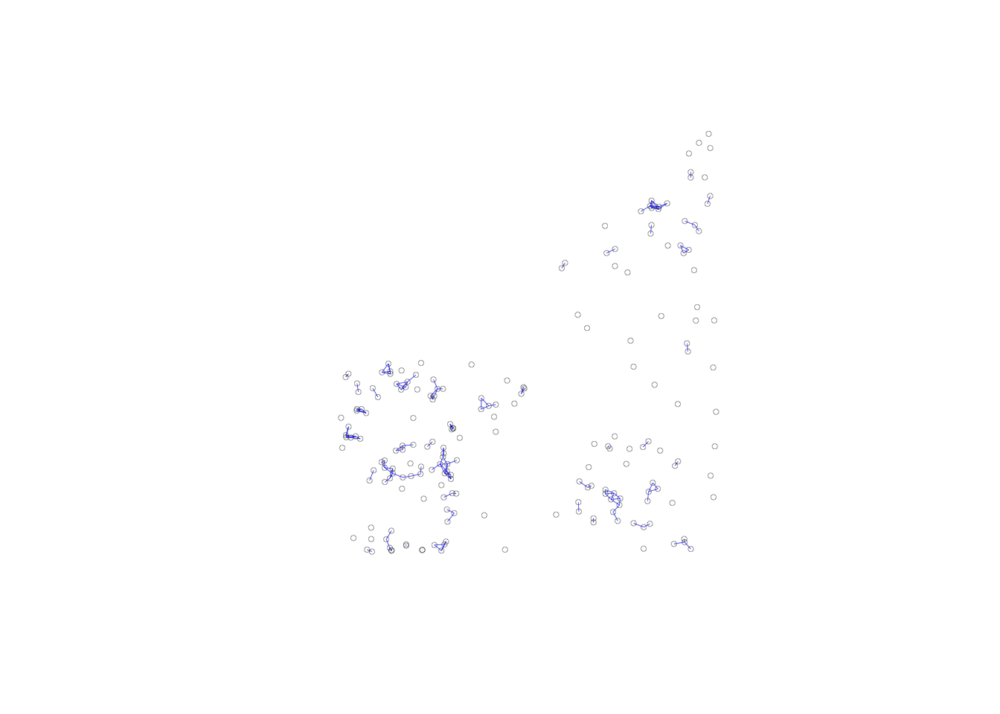
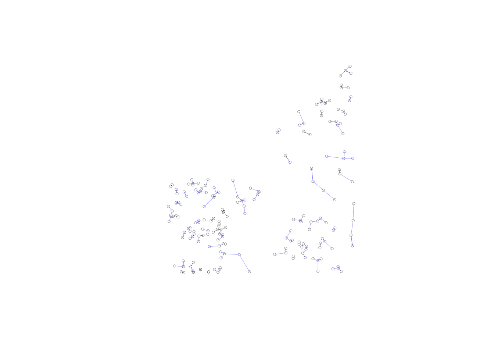

Chapter 14 Spatial Autocorrelation
14.1 Install packages
Make sure you have the spdep package installed:
install.packages("spdep")I also developed a helper package for some of this spatial autocorrelation stuff, called sfExtras. Install with:
# install.packages("remotes")
remotes::install_github("spatialanalysis/sfExtras")14.2 Review from previous workshops
We’ll be working with a new dataset, called “ncovr”. Go ahead and load it with geodaData:
library(geodaData)
library(sf)
head(ncovr)## Simple feature collection with 6 features and 69 fields
## geometry type: MULTIPOLYGON
## dimension: XY
## bbox: xmin: -120.8746 ymin: 47.79012 xmax: -94.43044 ymax: 49.37173
## epsg (SRID): 4326
## proj4string: +proj=longlat +datum=WGS84 +no_defs
## NAME STATE_NAME STATE_FIPS CNTY_FIPS FIPS STFIPS COFIPS
## 1 Lake of the Woods Minnesota 27 077 27077 27 77
## 2 Ferry Washington 53 019 53019 53 19
## 3 Stevens Washington 53 065 53065 53 65
## 4 Okanogan Washington 53 047 53047 53 47
## 5 Pend Oreille Washington 53 051 53051 53 51
## 6 Boundary Idaho 16 021 16021 16 21
## FIPSNO SOUTH HR60 HR70 HR80 HR90 HC60 HC70
## 1 27077 0 0.000000 0.000000 8.855827 0.000000 0.0000000 0.0000000
## 2 53019 0 0.000000 0.000000 17.208742 15.885624 0.0000000 0.0000000
## 3 53065 0 1.863863 1.915158 3.450775 6.462453 0.3333333 0.3333333
## 4 53047 0 2.612330 1.288643 3.263814 6.996502 0.6666667 0.3333333
## 5 53051 0 0.000000 0.000000 7.770008 7.478033 0.0000000 0.0000000
## 6 16021 0 0.000000 0.000000 4.573101 4.000640 0.0000000 0.0000000
## HC80 HC90 PO60 PO70 PO80 PO90 RD60 RD70
## 1 0.3333333 0.0000000 4304 3987 3764 4076 -0.1751055 -0.1965356
## 2 1.0000000 1.0000000 3889 3655 5811 6295 -0.8368683 -0.8478556
## 3 1.0000000 2.0000000 17884 17405 28979 30948 -0.5373716 -0.2252831
## 4 1.0000000 2.3333333 25520 25867 30639 33350 -0.8201698 -0.3911261
## 5 0.6666667 0.6666667 6914 6025 8580 8915 -0.9361701 -0.4514569
## 6 0.3333333 0.3333333 5809 5484 7289 8332 -0.8503190 -0.6301795
## RD80 RD90 PS60 PS70 PS80 PS90 UE60
## 1 -0.36285011 -0.8027737 -1.4499461 -1.4625594 -1.5851232 -1.4955070 7.9
## 2 0.11932743 -0.1354830 -1.7072056 -1.6977199 -1.4440801 -1.3610839 8.2
## 3 -0.51119686 -0.2765439 -0.5681465 -0.5918834 -0.3154613 -0.2831232 10.1
## 4 -0.08242177 0.3707621 -0.5549386 -0.5520160 -0.5253836 -0.4724997 7.5
## 5 -0.28951626 0.1079923 -1.1064386 -1.1817536 -1.0122015 -0.9719778 10.6
## 6 -0.12031784 -0.5515577 -1.2083943 -1.2194174 -1.0980090 -0.9876962 10.8
## UE70 UE80 UE90 DV60 DV70 DV80 DV90 MA60 MA70
## 1 9.0 5.902579 3.89479 1.858974 2.619808 3.746594 7.388535 28.8 30.5
## 2 15.4 15.422886 16.81159 2.863278 3.686007 6.625442 11.543135 25.9 27.1
## 3 9.0 13.574064 10.70079 2.711447 2.976378 5.448223 9.123212 29.6 31.8
## 4 10.5 12.700195 10.20354 3.372041 4.090386 7.122333 9.245627 29.4 31.1
## 5 13.4 18.148999 14.99102 3.008988 4.010695 5.287860 10.158351 31.2 33.8
## 6 12.1 16.395711 11.37951 2.590420 3.489399 6.071152 8.477287 27.6 30.3
## MA80 MA90 POL60 POL70 POL80 POL90 DNL60 DNL70
## 1 34.5 35.5 8.367300 8.290794 8.233238 8.312871 1.188755 1.1122489
## 2 27.2 32.8 8.265907 8.203851 8.667508 8.747511 0.568786 0.5067301
## 3 28.7 34.5 9.791662 9.764513 10.274327 10.340064 1.975245 1.9480958
## 4 31.2 35.0 10.147218 10.160723 10.330029 10.414813 1.571567 1.5850725
## 5 31.3 36.1 8.841304 8.703673 9.057189 9.095491 1.595649 1.4580177
## 6 29.2 32.8 8.667164 8.609590 8.894122 9.027859 1.516462 1.4588886
## DNL80 DNL90 MFIL59 MFIL69 MFIL79 MFIL89 FP59 FP69
## 1 1.0660453 1.145294 8.220134 8.708309 9.551729 10.27921 36.3 16.1
## 2 0.9712953 1.049482 8.519790 9.006754 9.679719 10.25397 22.5 11.6
## 3 2.4623128 2.524736 8.403352 8.868835 9.739379 10.26270 30.9 15.9
## 4 1.7581014 1.845350 8.479907 8.969923 9.715228 10.04962 25.0 12.9
## 5 1.8129617 1.850906 8.508354 8.895219 9.648466 10.11144 26.7 18.3
## 6 1.7488466 1.882032 8.423102 8.946505 9.604745 10.13809 27.2 11.1
## FP79 FP89 BLK60 BLK70 BLK80 BLK90 GI59
## 1 13.37047 8.51419 0.44144981 0.47654878 0.05313496 0.02453386 0.2852352
## 2 18.63395 17.52451 0.07714065 2.29822161 0.55067975 0.31771247 0.2561578
## 3 11.22669 13.58268 0.07828226 0.09192761 0.09317092 0.21002973 0.2839986
## 4 12.19627 16.94620 0.09796238 0.28221286 0.10117824 0.15592204 0.2585395
## 5 12.59607 15.93098 0.02892682 0.01659751 0.06993007 0.13460460 0.2432630
## 6 14.78873 10.63830 0.00000000 0.05470460 0.04115791 0.03600576 0.2619386
## GI69 GI79 GI89 FH60 FH70 FH80 FH90
## 1 0.3723362 0.3421036 0.3364546 11.279621 5.4 5.663881 9.515860
## 2 0.3606654 0.3619284 0.3606395 10.053476 2.6 10.079576 11.397059
## 3 0.3940829 0.3575660 0.3699418 9.258437 5.6 6.812127 10.352015
## 4 0.3712182 0.3812402 0.3945189 9.039900 8.1 10.084926 12.840340
## 5 0.3656141 0.3587056 0.3878477 8.243930 4.1 7.557643 10.313002
## 6 0.3503514 0.3559135 0.3405252 7.112971 6.8 8.249497 9.343201
## geometry
## 1 MULTIPOLYGON (((-95.34258 4...
## 2 MULTIPOLYGON (((-118.8505 4...
## 3 MULTIPOLYGON (((-117.4378 4...
## 4 MULTIPOLYGON (((-118.971 47...
## 5 MULTIPOLYGON (((-117.4375 4...
## 6 MULTIPOLYGON (((-117.028 48...Question
Take a few minutes and try to understand what this is about.
- How many observations and variables are there? What data is stored? (
dim(),str(),head(),summary()) - What does the metadata tell you about this data? (
?ncovr) - What geometries are in this data? Can you make a quick map with
plot()? - What coordinate reference system is there? Is this data projected? (
st_crs())
Question
Try to make a simple map of one of the attributes of interest (homicides, etc) with tmap. Can you make it interactive?
14.3 Spatial autocorrelation
We’ll start by talking about spatial weights. There are two main types of spatial weights, contiguity and distance based weights.
We’ll focus on contiguity today: aka, that a spatial unit shares a border with another spatial unit. We look at rook vs. queen contiguity.

There’s also second order contiguity:

How we define “neighbors” matters when we are trying to determine spatial autocorrelation.
14.4 Do it in R
Load two more libraries:
library(sfExtras)
library(spdep)We’ll be using the following functions (potentially buggy):
?st_rook
?st_queen
?st_as_nb
?st_centroid_coords # for mapping the weightsThe code we wrote last week to calculate weights:
library(tmap)
tm_shape(ncovr) +
tm_polygons("HR60")
ncovr_rook <- st_rook(ncovr)## although coordinates are longitude/latitude, st_relate_pattern assumes that they are planarncovr_queen <- st_queen(ncovr)## although coordinates are longitude/latitude, st_relate_pattern assumes that they are planar# check average number of neighbors per county
rook_neighbors <- lengths(ncovr_rook)
queen_neighbors <- lengths(ncovr_queen)
mean(rook_neighbors) # 5.6 ish## [1] 5.571475mean(queen_neighbors) # 5.8 ish## [1] 5.889141# convert lists of neighbors to "nb" object to make map
rook_nb <- st_as_nb(ncovr_rook)
summary(rook_nb)## Neighbour list object:
## Number of regions: 3085
## Number of nonzero links: 17188
## Percentage nonzero weights: 0.1805989
## Average number of links: 5.571475
## Link number distribution:
##
## 1 2 3 4 5 6 7 8 9 10 11 13
## 24 41 108 377 863 1007 484 136 37 6 1 1
## 24 least connected regions:
## 45 49 585 643 837 1197 1377 1402 1442 1464 1470 1523 1531 1532 1543 1596 1605 1653 1737 1767 1775 2892 2893 2919 with 1 link
## 1 most connected region:
## 606 with 13 linksqueen_nb <- st_as_nb(ncovr_queen)
summary(queen_nb)## Neighbour list object:
## Number of regions: 3085
## Number of nonzero links: 18168
## Percentage nonzero weights: 0.190896
## Average number of links: 5.889141
## Link number distribution:
##
## 1 2 3 4 5 6 7 8 9 10 11 13 14
## 24 36 91 281 620 1037 704 227 50 11 2 1 1
## 24 least connected regions:
## 45 49 585 643 837 1197 1377 1402 1442 1464 1470 1523 1531 1532 1543 1596 1605 1653 1737 1767 1775 2892 2893 2919 with 1 link
## 1 most connected region:
## 1371 with 14 linkscentroid_coords <- st_centroid_coords(ncovr)
plot(queen_nb, centroid_coords, lwd = 0.2, cex = 0.5, col = "blue")
14.5 Second order contiguity weights
14.6 Distance-Band Spatial Weights
To match the GeoDa documentation, we’ll be using a dataset called “clev_pts”. Go ahead and load it with geodaData (if you can’t, you can download it from the Data and Lab website):
library(geodaData)
library(sf)
head(clev_pts)## Simple feature collection with 6 features and 9 fields
## geometry type: POINT
## dimension: XY
## bbox: xmin: 2177090 ymin: 662872 xmax: 2182100 ymax: 663462
## epsg (SRID): 3734
## proj4string: +proj=lcc +lat_1=41.7 +lat_2=40.43333333333333 +lat_0=39.66666666666666 +lon_0=-82.5 +x_0=600000 +y_0=0 +ellps=GRS80 +towgs84=0,0,0,0,0,0,0 +units=us-ft +no_defs
## unique_id parcel x y sale_price tract10int Quarter year1
## 1 1183 002-02-036 2177340 663165 235500 101200 4 2015
## 2 1198 002-02-053 2177090 662872 65000 101200 4 2015
## 3 1516 002-14-053 2182100 663462 92000 103500 4 2015
## 4 1606 002-15-038 2181090 663162 5000 103400 4 2015
## 5 1612 002-15-043 2181090 663380 116250 103400 4 2015
## 6 1624 002-16-003 2180350 663301 120000 103100 4 2015
## yrquarter geometry
## 1 154 POINT (2177340 663165)
## 2 154 POINT (2177090 662872)
## 3 154 POINT (2182100 663462)
## 4 154 POINT (2181090 663162)
## 5 154 POINT (2181090 663380)
## 6 154 POINT (2180350 663301)Question
Take a few minutes and try to understand what this is about.
- How many observations and variables are there? What data is stored? (
dim(),str(),head(),summary()) - What does the metadata tell you about this data? (
?clev_pts) - What geometries are in this data? Can you make a quick map with
plot()? - What coordinate reference system is there? Is this data projected? (
st_crs())
Question
Try to make a simple map of one of the attributes of interest (homicides, etc) with tmap. Can you make it interactive?
There are two ways to go about doing distance-based spatial weights, as mentioned in the GeoDa documentation:
- Determine a distance band under which something is considered a neighbor (see below)
- Determine the number of neighbors each point should have (distances will vary)

We’ll start with the first.
?dnearneighLet’s specify a bandwidth of 1000.
dnearneigh(clev_pts, 0, 1000)## Neighbour list object:
## Number of regions: 205
## Number of nonzero links: 314
## Percentage nonzero weights: 0.7471743
## Average number of links: 1.531707
## 55 regions with no links:
## 3 16 18 20 22 29 30 36 37 55 56 57 58 59 63 64 92 96 111 112 116 117 118 120 121 131 139 140 141 142 145 148 149 150 151 152 153 154 155 156 157 160 163 164 165 166 167 173 174 187 190 197 198 199 200Question
What units does “1000” refer to? (Hint: check with st_crs!)
We can plot this to get a sense of what’s going on. Remember, the syntax for plot() is plot(nb, coord_matrix, options).
dist_1000_nb <- dnearneigh(clev_pts, 0, 1000)
plot(dist_1000_nb, st_coordinates(clev_pts), lwd=.2, col="blue", cex = .5)
Notice how a lot of points are missing neighbors? They’re referred to as “isolates”.
Maybe we want to specify a minimum distance so that each point has a neighbor. This is referred to as the critical threshold.
If we want each point to have one neighbor, we can use knearneigh. This (older function) takes in a matrix and returns a matrix, so we need to convert formats.
knn_matrix <- knearneigh(st_coordinates(clev_pts))To convert this matrix into a familiar nb, we use knn2nb:
knn2nb(knn_matrix)## Neighbour list object:
## Number of regions: 205
## Number of nonzero links: 205
## Percentage nonzero weights: 0.4878049
## Average number of links: 1
## Non-symmetric neighbours listNow when we plot again, we see each point has a neighbor:
k1_nb <- knn2nb(knn_matrix)
plot(k1_nb, st_coordinates(clev_pts), lwd=.2, col="blue", cex = .5)
Each point has exactly one neighbor here.
Question
Now let’s try doing something different: setting the distance band equal to the critical threshold in dnearneigh().
The nbdists function will give us the distance between a point and its closest neighbor.
nbdists(k1_nb, st_coordinates(clev_pts))Question
critical_thres? Can you put it into the dnearneigh function and plot a map where we have a fixed distance band of the critical threshold?
14.7 Connectivity histograms
When doing distance band weights, points have different numbers of neighbors, unlike in k-nearest weights. Let’s get the cardinality (aka number of neighbors) for each observation
card(dist_crit_nb)## [1] 9 9 15 15 15 17 15 15 19 18 20 20 20 19 14 17 17 19 13 3 9 10 7
## [24] 6 6 12 10 10 10 13 16 17 12 16 14 17 9 11 13 11 16 14 17 17 18 13
## [47] 13 17 18 16 16 24 27 22 17 8 7 5 0 11 11 11 11 11 13 13 13 13 13
## [70] 16 16 14 14 13 13 10 10 9 10 23 25 32 28 28 26 23 23 32 23 23 21 24
## [93] 18 18 17 21 15 20 20 22 19 22 22 19 16 18 20 19 19 23 19 29 30 1 1
## [116] 1 1 3 5 3 3 4 9 9 9 9 11 10 11 13 11 8 9 12 16 10 9 7
## [139] 6 6 3 6 8 8 7 7 7 4 6 5 5 3 2 2 2 7 8 8 10 8 6
## [162] 3 2 2 3 2 6 7 8 10 14 14 12 17 16 16 20 19 19 13 17 13 15 12
## [185] 11 14 5 8 9 8 10 12 6 5 4 3 4 1 9 4 13 13 15 15 17Question